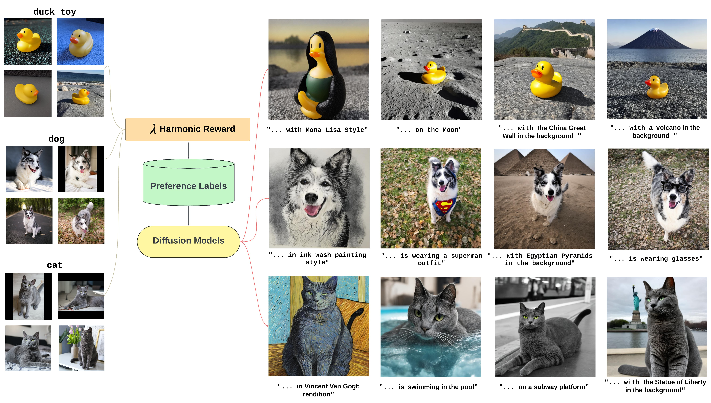
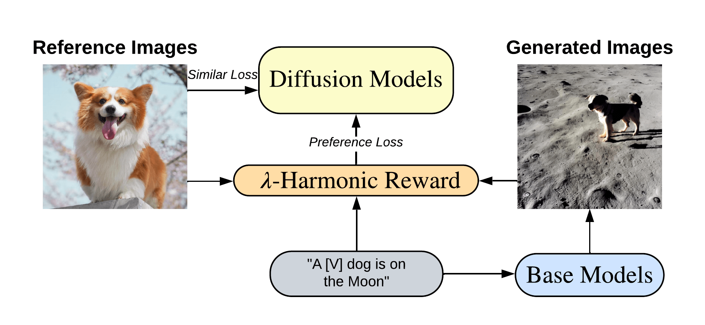
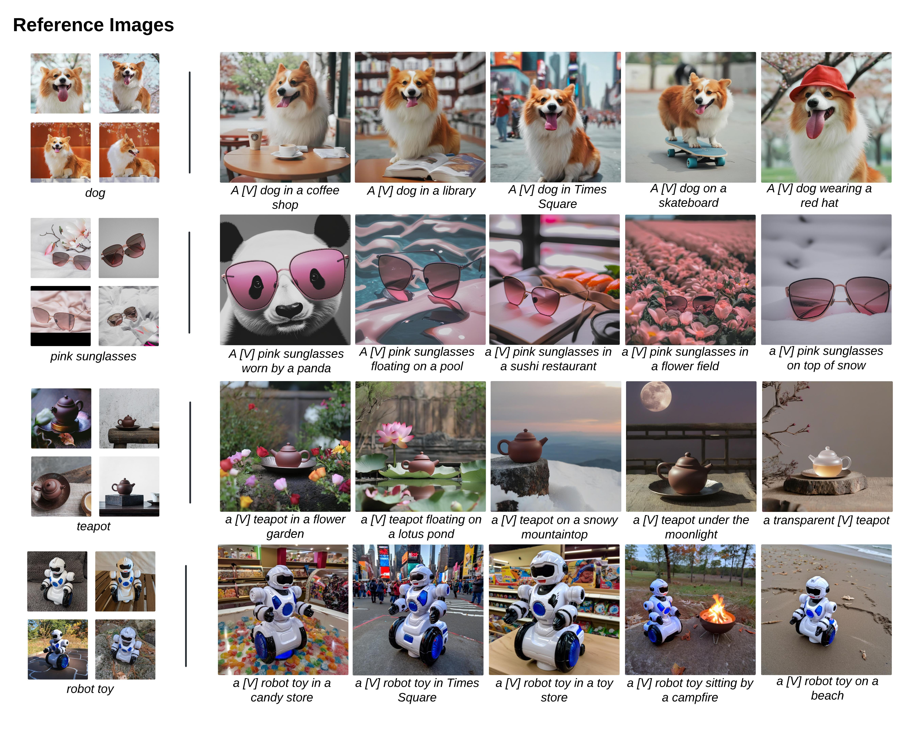
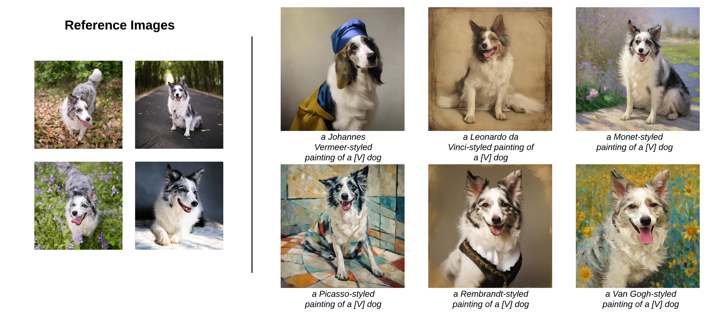
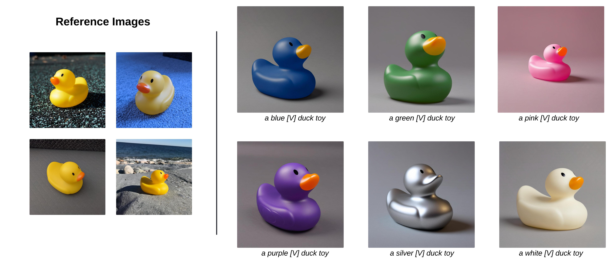
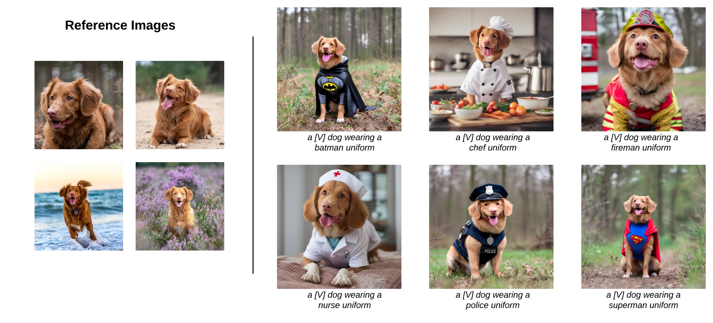
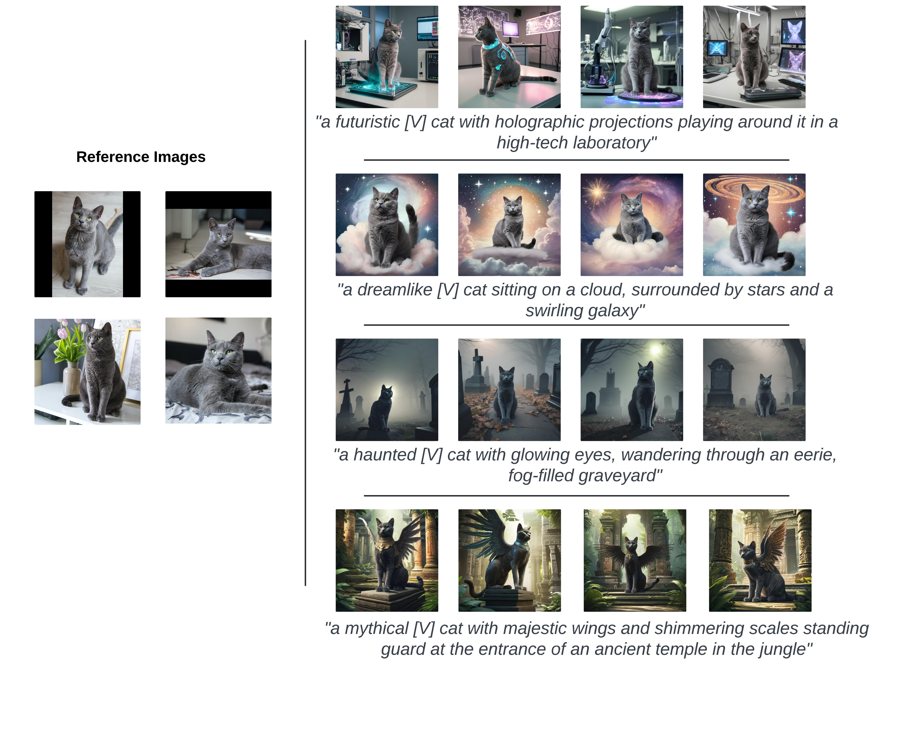

Subject-driven Text-to-Image Generation via Preference-based Reinforcement Learning
Yanting Miao
William Loh
Suraj Kothawade
Pascal Poupart
Abdullah Rashwan
Yeqing Li

TL;DR: We present the \( \lambda \)-Harmonic reward function and Reward Preference Optimization (RPO) for the subject-driven text-to-image generation task.
Abstract
Text-to-image generative models have recently attracted considerable interest, enabling the synthesis of high-quality images from textual prompts. However, these models often lack the capability to generate specific subjects from given reference images or to synthesize novel renditions under varying conditions. Methods like DreamBooth and Subject-driven Text-to-Image (SuTI) have made significant progress in this area. Yet, both approaches primarily focus on enhancing similarity to reference images and require expensive setups, often overlooking the need for efficient training and avoiding overfitting to the reference images. In this work, we present the \( \lambda \)-Harmonic reward function, which provides a reliable reward signal and enables early stopping for faster training and effective regularization. By combining the Bradley-Terry preference model, the \( \lambda \)-Harmonic reward function also provides preference labels for subject-driven generation tasks. We propose Reward Preference Optimization (RPO), which offers a simpler setup (requiring only 3% of the negative samples used by DreamBooth) and fewer gradient steps for fine-tuning. Unlike most existing methods, our approach does not require training a text encoder or optimizing text embeddings and achieves text-image alignment by fine-tuning only the U-Net component. Empirically, \( \lambda \)-Harmonic proves to be a reliable approach for model selection in subject-driven generation tasks. Based on preference labels and early stopping validation from the \( \lambda \)-Harmonic reward function, our algorithm achieves a state-of-the-art CLIP-I score of 0.833 and a CLIP-T score of 0.314 on DreamBench.
Method
RPO is a preference-based reinforcement learning algorithm. First, we use pretrained diffusion models to generate images from novel textual prompts. Then, we apply the \( \lambda \)-Harmonic reward function to assign preference labels. During training, the \( \lambda \)-Harmonic function is designed to evaluate text-to-image alignment. RPO fine-tunes the UNet components by minimizing both the image-similarity loss and the preference loss, where the preference loss is formulated as a logistic regression. During validation, the \( \lambda \)-Harmonic reward function provides preference labels for both image-to-image and text-to-image alignment, serving as a reliable model selection method.

Re-Contextualization
We provide additional results for re-contextualization on this page. We generate various subject-driven images using multiple prompts. The input prompts and results are shown below.

Art Rendition
We provide additional results for art rendition on this page. We generate various subject-driven images using multiple prompts. The input prompts and results are shown below.

Color Modification
We provide additional results for color modification on this page. We generate various subject-driven images using multiple prompts. The input prompts and results are shown below.

Accessorization
We provide additional results for accessorization on this page. We generate various subject-driven images using multiple prompts. The input prompts and results are shown below.

Novel Prompts Synthesis
We provide additional results for novel prompts synthesis on this page. We generate various subject-driven images using multiple prompts. The input prompts and results are shown below.

BibTex
@inproceedings{miao2024subjectdriven,
title={Subject-driven Text-to-Image Generation via Preference-based Reinforcement Learning},
author={Yanting Miao and William Loh and Suraj Kothawade and Pascal Poupart and Abdullah Rashwan and Yeqing Li},
booktitle={The Thirty-eighth Annual Conference on Neural Information Processing Systems},
year={2024},
}
Acknowledgements
We thank Shixin Luo and Hongliang Fei for providing constructive feedback. This work was supported by a Google grant with Cloud TPUs from Google’s TPU Research Cloud (TRC). We also thank the Vector Institute, the Canada CIFAR AI Chair program and the Natural Sciences and Engineering Research Council of Canada for their support.